Introduction to Structural Health Monitoring
Smart Civil Structures: L01
Smart Structure?
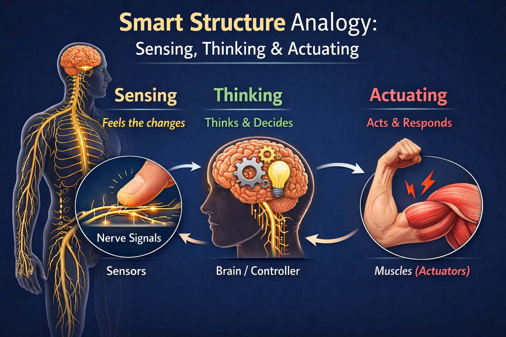
A smart structure is an engineered system that can sense, interpret, and respond to changes in its environment or its own condition in a self-adaptive way.
In simple terms, a smart structure behaves a bit like a living organism:
- it feels what is happening,
- thinks about what it means,
- and acts to improve performance, safety, or durability.
Definition of SHM (1/2)
Structural Health Monitoring (SHM) is the continuous or periodic process of measuring a structure’s response to detect, localize, and quantify damage, and to inform maintenance and safety decisions.
- Uses sensors (e.g., acceleration, strain, displacement) and data acquisition to track condition over time.
- Relies on models or baselines to compare measured behavior against expected performance.
- Aims to detect anomalies early, reduce inspection costs, and improve reliability and safety.
- Typical outputs: damage indicators, remaining useful life estimates, and alarms/alerts for operators.
Definition of SHM (2/2)
Structural Health Monitoring (SHM) is the continuous or periodic process of measuring a structure’s performance in the way it was designed to behave.
- Any unexpected behaviour has to be identified and addressed
- The performance in the designed behavour needs to be measured and monitored
SHM Process
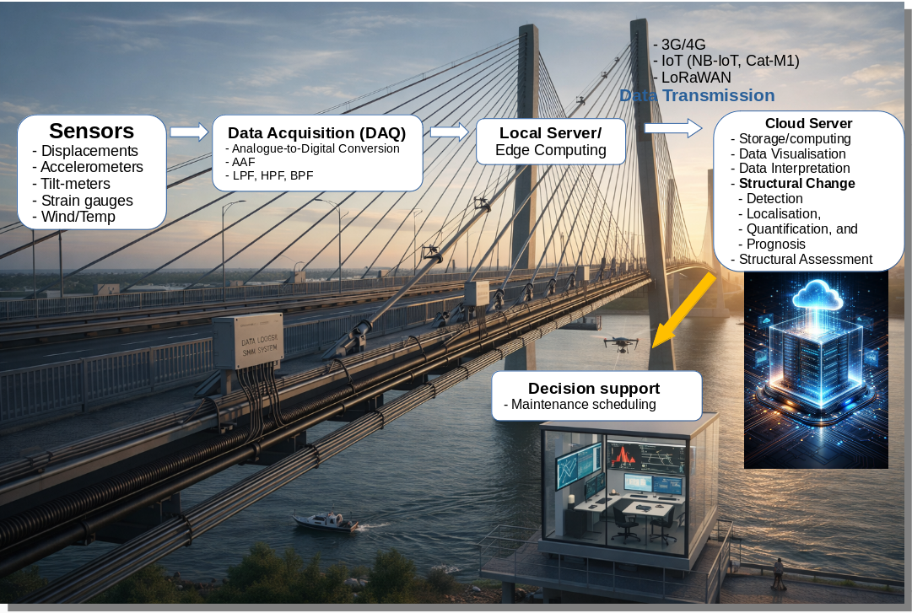
The image shows an end‑to‑end SHM pipeline on a long-span bridge.
Sensors distributed along the deck and cables measure responses such as displacement, acceleration, tilt, strain, and environmental loads (wind/temperature). Those analog signals feed a data‑acquisition unit (DAQ) mounted on the structure, where they’re conditioned, filtered, and converted to digital form.
From there, data flows to a local edge computer on or near the bridge for initial processing and health checks. A wireless link (e.g., 4G/IoT/LoRaWAN) transmits the data to a cloud server for storage, visualization, and heavier analytics.
In the cloud, structural changes are detected and quantified, enabling localization of damage and prognosis of performance.
Finally, insights are delivered to operators through a decision‑support interface, guiding maintenance scheduling and interventions. This closes the loop from sensing and data handling to actionable engineering decisions.
SHM Examples
Two SHM exercises are presented here for your understanding on Structural Health Monitoring.
- Rugeley Chimney Monitoring
- Tamar Bridge Monitoring
Rugeley Chimney, Staffordshire
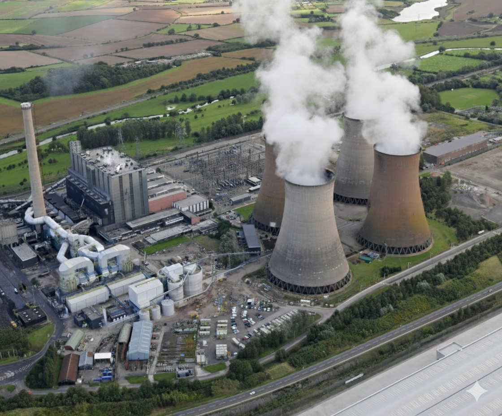
- Original chimney (183m high) commissioned in 1970
- New chimney started to construct from 2007 for a Flue Gas Desulphurisation
- Original chimney swayed much on a windy day, a risk of collapse alarmed
New Chimney Construction Haulted
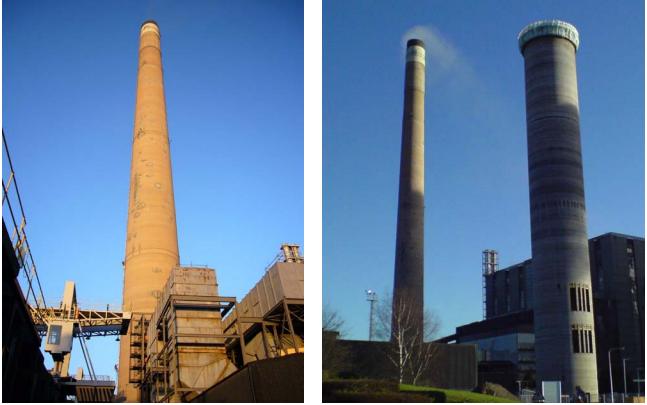
Unlucky Orientation
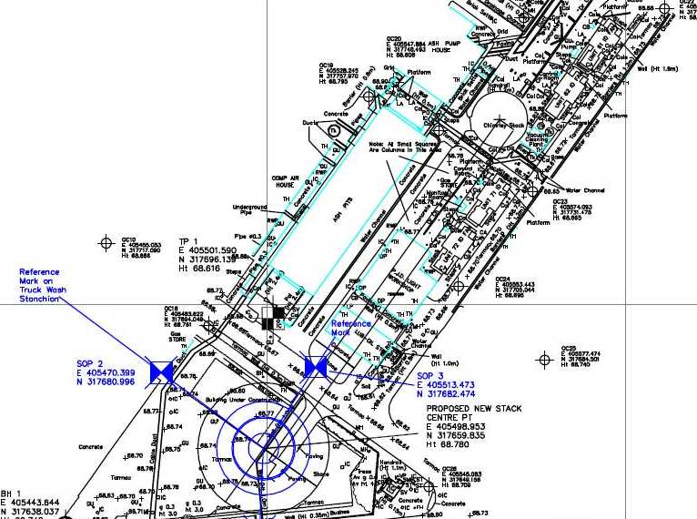
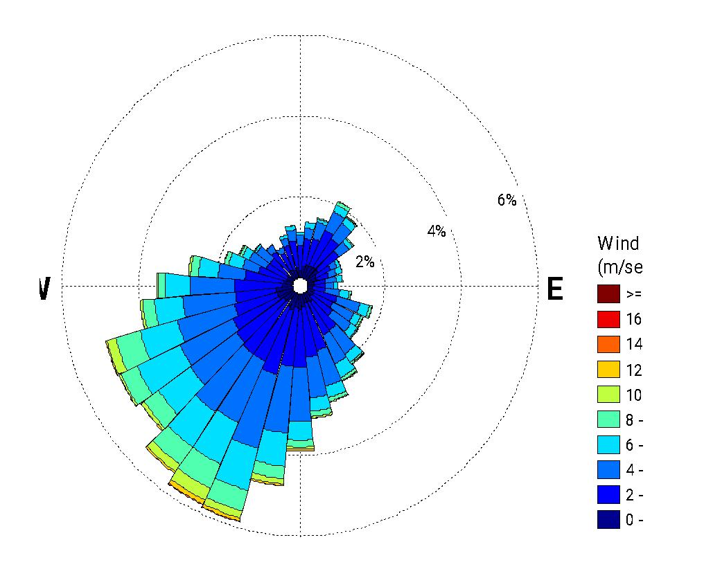
CFD Simulation
- Enhanced Vortext Shedding
Response of Rugeley Power-Station
- Installing a Tunned-Mass-Damper on Old Chimney
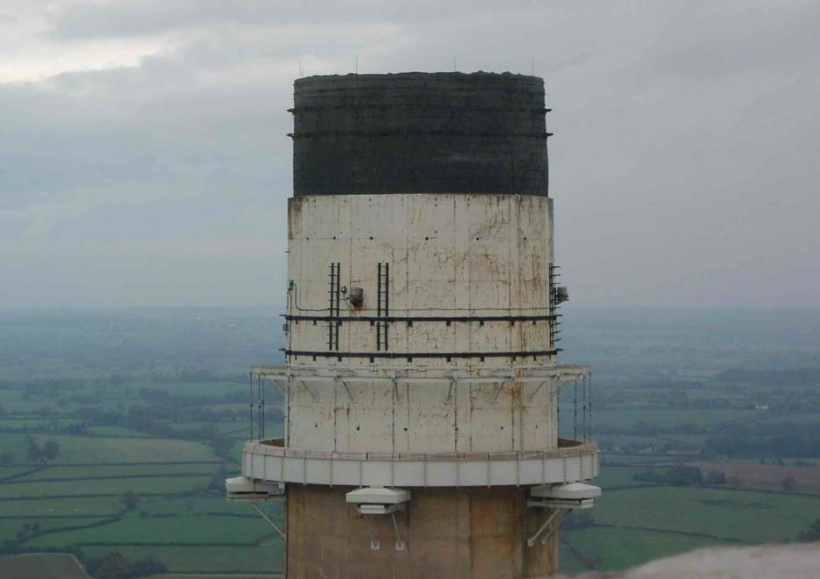
- 42 tonnes mass (~3% mass ratio)
- 5 oil dampers, 180kNs/m damping each
- 450mm travel
Response of Rugeley Power-Station
- Installing Vibration Monitoring System
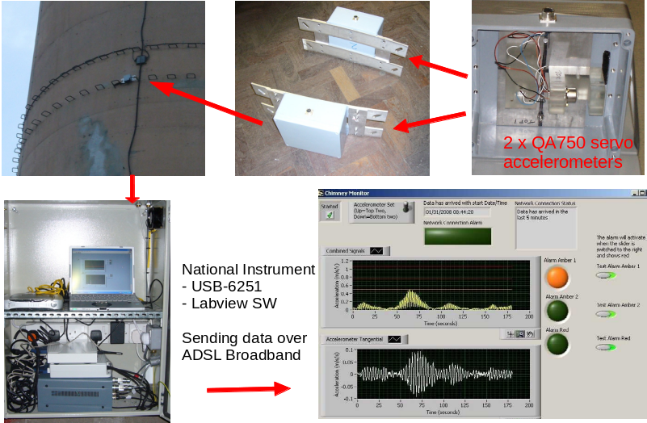
- Alarming/site-evaculation for high-sways
- Validating Performance of TMD
Online Damping Estimation
- Showed that TMD actually worked
- Damping increased from 0.7% to around 4% (29 Feb 2008)
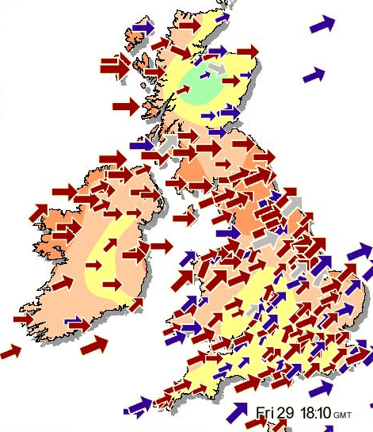
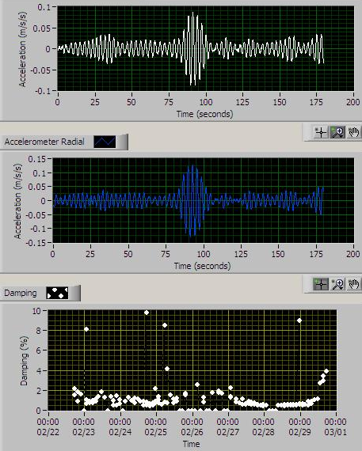
Demolition of Old/New Chimneys
- After completion of New Chimney construction, the Old chimney had been demolished in 2009-2010
- The owner announced the station’s closure 2016 due to falling power prices and high carbon costs
- The new chimney and four cooling towers were blown down in 2021.
Post-project Review
The two objectives of the monitoring system
- Warning site-workers in case of a risk of collapse due to a large vibration in the old chimney
- Confirming effectiveness of the tunned-mass-damper
VES helped the Rugeley powerstation to manage a risk of collapse and to construct the new chimney successfully.
This was the impact case study successfully demonstrated usefulness of Innovative SHM for real-world
Tamar Bridge SHM
Overview

Overview

Overview
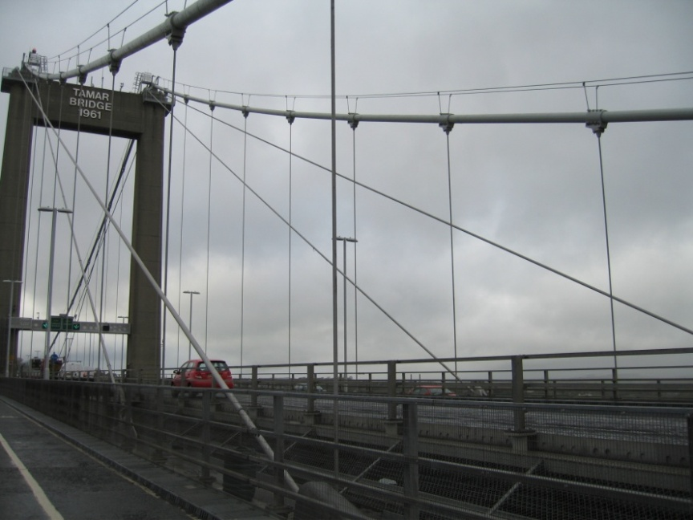
Restrengthening in 2000
To meet the EU directive to carry HGVs up to 40 tonf

- Heavy concrete deck had been replaced by light weight orthotropic deck
- Cantilever lanes were added on both sides: southern lane for pedestrian, northern lane for traffic
- Additional stay cables were added to carry temperary consruction loads
- this unusual restrengthing and structural configuration required a need of construnction monitoring system.
Fugro System
Installed for restrengthening monitoring and beyond for static measurements
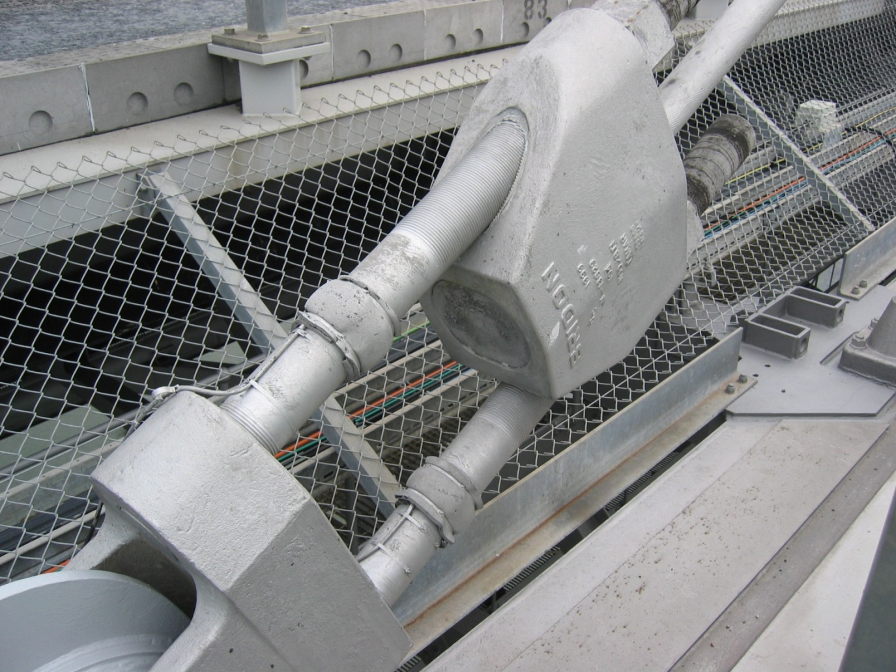
- Stay cable tension, deck-level sensor, wind, and temperature
- In total, 90 channels of static load and response sampled at 1 Hz
Fugro System
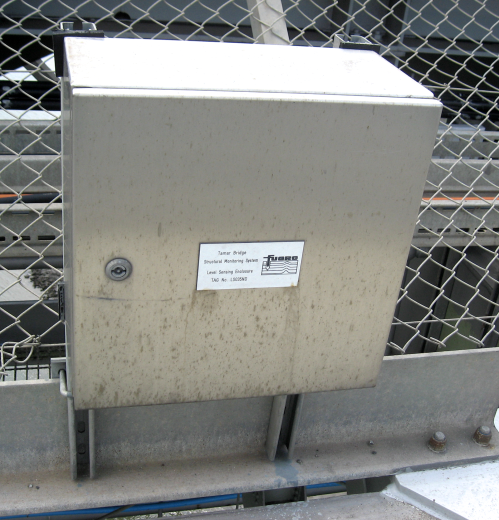
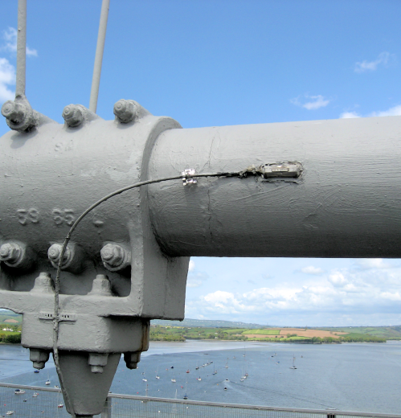
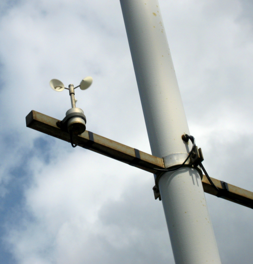
VES Sensors added in 2006
QA servo accelerometers
Main-span Deck (3 qt: 2 vertical + 1 horizontal)
Additional Stay cables (8 qts: on 4 stay cables as a perpendicular pairs)
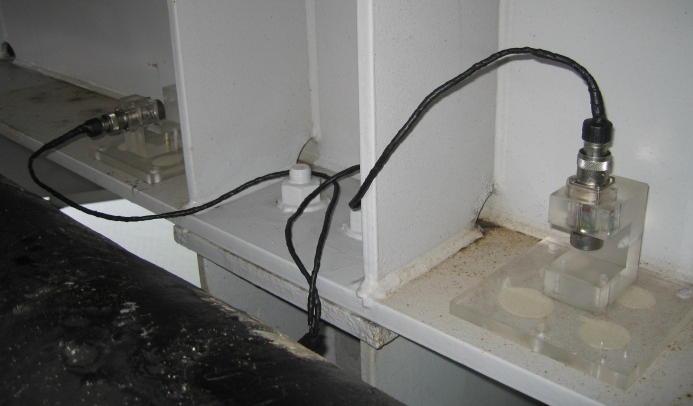
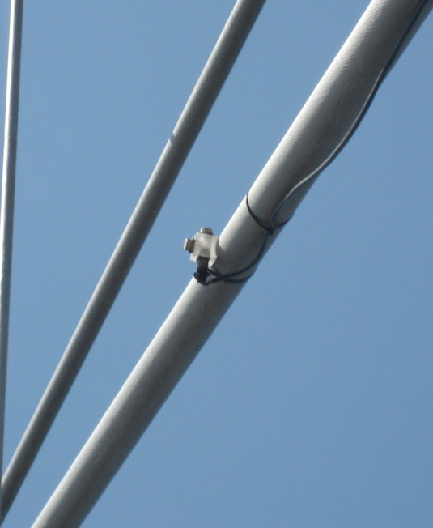
VES Sensors added in 2009
Leica Robotic Total Station measuring 3D movement of reflectors on the bridge.
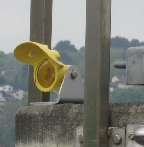
- 15 reflectors
- 11 on deck,
- 2 on top of towers
- 2 on Abutments
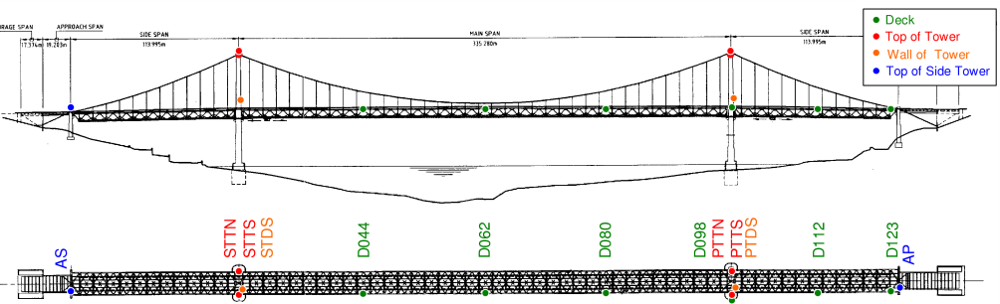
VES/FSDL Website
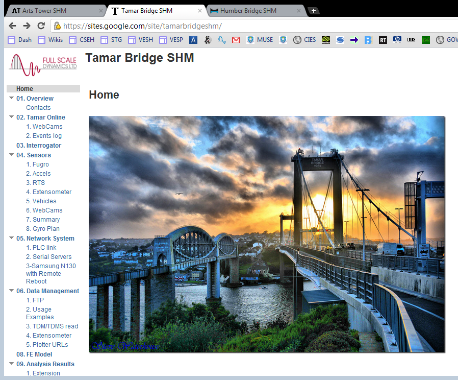
Data Integration Challenge
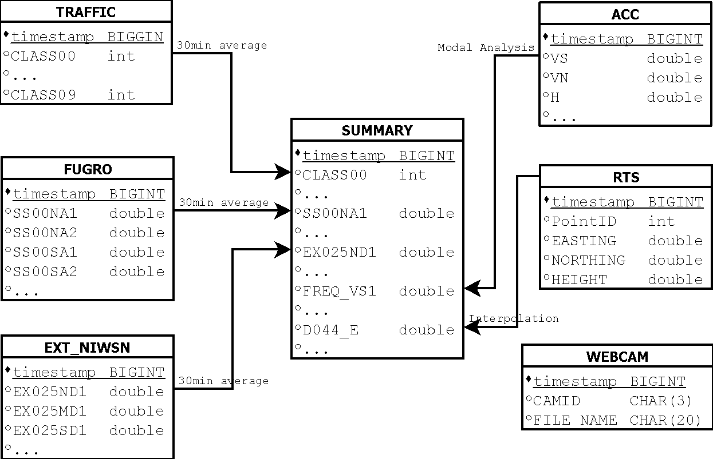
SUMMARY table contains 30-minute mean/RMS values to unitify various measurements with different sampling rates.
This is the brilliant way useful for all SHM systems.
Reflection on Tamar SHM
- Tamar Bridge SHM is still on-going
- The structural behaviour of Tamar Bridge under thermal/vehicle loadings have been understood by some amount,
- But there must be much further to be found in the future by the next geration.
Closure
This first part of the module, Structural Health Monitoring, will cover the following technical Elements with real examples
- Sensors
- DAQ
- Signal Processing
- Operational Modal Analysis
- Finite Model Updating
- etc